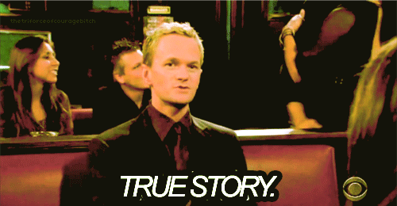

GOOD QUESTION.
A lot of you are probably thinking something along the lines of, "What's the big deal if I work with my friends on my homework?" or "Why does anyone care if I cheat? It doesn't actually hurt anyone."
If cheating really didn't hurt anyone, we wouldn't have made this module, we wouldn't have an Office of Student Conduct, and we wouldn't have written the Code of Academic Integrity.
Obviously, we did all of those things though, and we have five big reasons why:
Because academic dishonesty inhibits learning
If you copy from another person or from a book or website, you are deliberately choosing to let someone else do your learning for you and to avoid even trying to learn something yourself.
So people can trust your work

Turning in work that is completed through dishonest means is just like lying. A reputation for being untruthful will overshadow how smart and how motivated you really are when you go to take the next step in your academic or professional life.
So you stay true to your own expectations

You may not realize it, but you are constantly depending on people to act with integrity. Make sure that people can place that same trust in you now and during your professional career.
To maintain the integrity of a Maryland degree
Academic dishonesty makes your degree look meaningless to others - not to mention, other alumni's degrees.
To uphold the standards of the University community

The University of Maryland values and expects ethical action and strong moral character from all community members. Acting with academic integrity is one of the most important ways you can show your Maryland Pride.